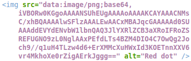
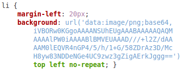

It's never been this easy!
To generate data-URI from your images, simply drag one or more images from your desktop to the dropbox area on the right.
drop it like it's hot →
What?
The data URI scheme is a URI scheme that provides a way to include data in-line in web pages as if they were external resources.
A data URI can be used in a img-tag like this:

But also in a stylesheet like this.

Before you can use an image for this, you need to encode it into this data URI scheme. That's what daturi is for!
source: wikipedia
How?


Why?
Because I wanted a small project to work on and try out some things like, HTML5 dropareas, javascript FileReader API, Google Webfonts, etc.
Who?
This is made by Guyon Moree.